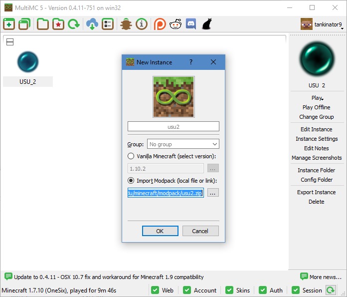
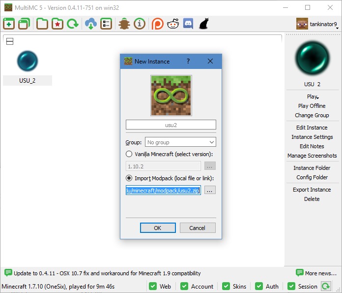

Instructions
- Download the MultiMC client
-
Create a new minecraft instance, and enter http://abe-network.bluezone.usu.edu/minecraft/modpacks/usu2.zip for the Import Modpack url.
 - Log in and play!
Create a new minecraft instance, and enter http://abe-network.bluezone.usu.edu/minecraft/modpacks/usu2.zip for the Import Modpack url.
